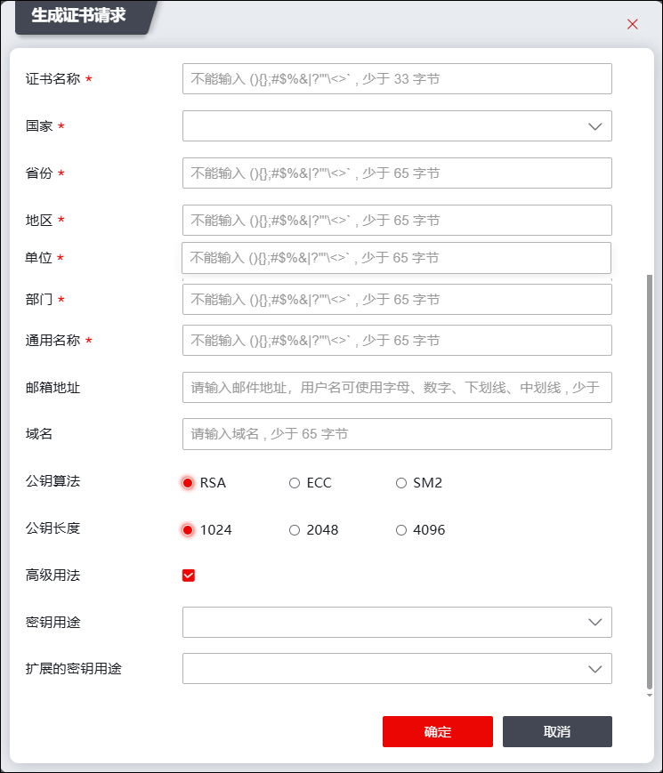
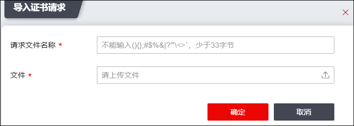
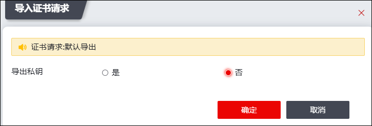

证书请求文件(CSR文件，是Cerificate SigningRequest的英文缩写)，也就是证书申请者在申请数字证书时由CSP(加密服务提供者)在生成私钥的同时也生成证书请求文件CSR，证书申请者只需要把CSR文件提交给证书颁发机构后，证书颁发机构使用其根证书私钥签名就生成了证书公钥文件。
PKI支持对请求文件(CSR)进行管理，包括查看、导入、导出、生成、删除、清空操作，同时支持本地CA对请求文件进行签发。
| 步骤1 | 选择 。 |
| 步骤2 | 生成证书请求文件 |
1）点击【生成证书请求】按钮，如下图所示。

在生成证书请求时，各项参数的具体说明如下表所示。
参数 |
说明 |
|---|---|
证书名称 |
设置生成证书的名称。 说明： 最多输入33个字符（一个汉字占三个字节；一个字母/数字占一个字节），区分大小写。 |
国家 |
选择生成证书的网关设备的国家属性。 |
省份、地区、单位、部门、通用名称、电子邮件 |
设置生成证书的网关设备的其他属性。 |
域名 |
配置证书请求域名。 |
公钥算法 |
选择加/解密数据包使用的算法类型。可选项：RSA、ECC和SM2。 |
私钥长度 |
公钥算法选择为“RSA”时，设置RSA算法私钥长度，单位为bit，长度可选择1024、2048、4096。 |
公钥参数 |
公钥算法选择为“ECC”时，设置ECC算法参数。 |
高级用法 |
选择是否勾选证书请求高级用法。 |
密钥用途 |
秘钥用途可选择数字签名服务、密钥加密、数据加密、抗抵赖服务、密钥协商。 |
扩展秘钥用途 |
扩展秘钥用途可选择数字签名服务、密钥加密、数据加密、抗抵赖服务、密钥协商等。 |
2）点击【确定】按钮完成证书请求的配置。
| 步骤3 | 导入证书请求文件 |
1）点击【导入证书请求】按钮，如下图所示。

在导入证书请求时，各项参数的具体说明如下表所示。
参数 |
说明 |
|---|---|
请求文件名称 |
输入合法的请求文件名称。 |
文件 |
点击“ |

2）点击【确定】按钮完成证书请求的上传。
| 步骤4 | 导出证书请求文件 |
选中证书请求文件，点击“导出”按钮，可将申请的证书文件下载至本地主机，如下图所示。

| 步骤5 | 查看证书请求文件 |
选中证书请求文件，点击“查看”按钮，可查看该证书的详细信息。